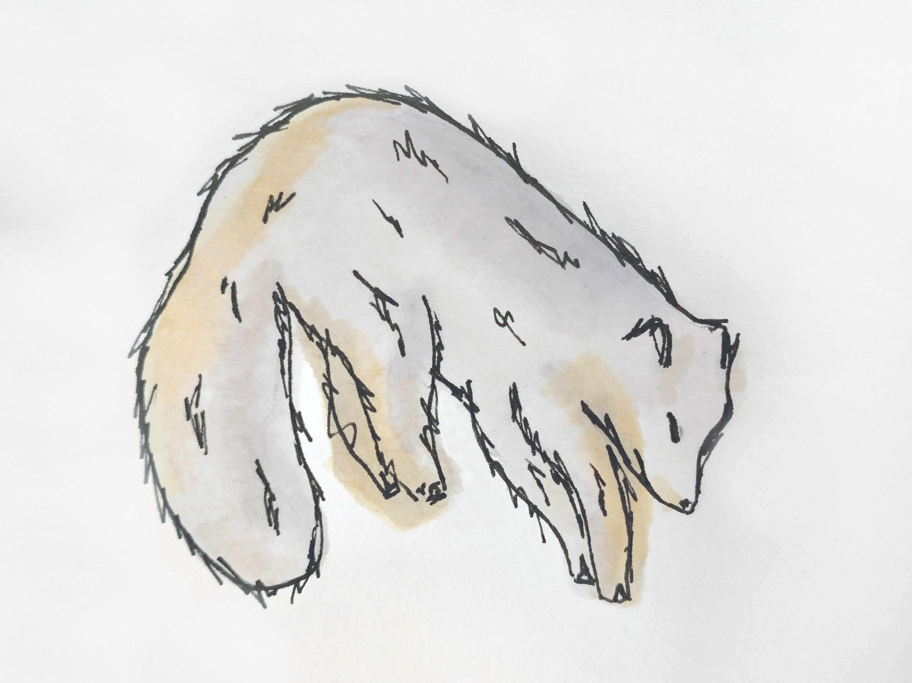
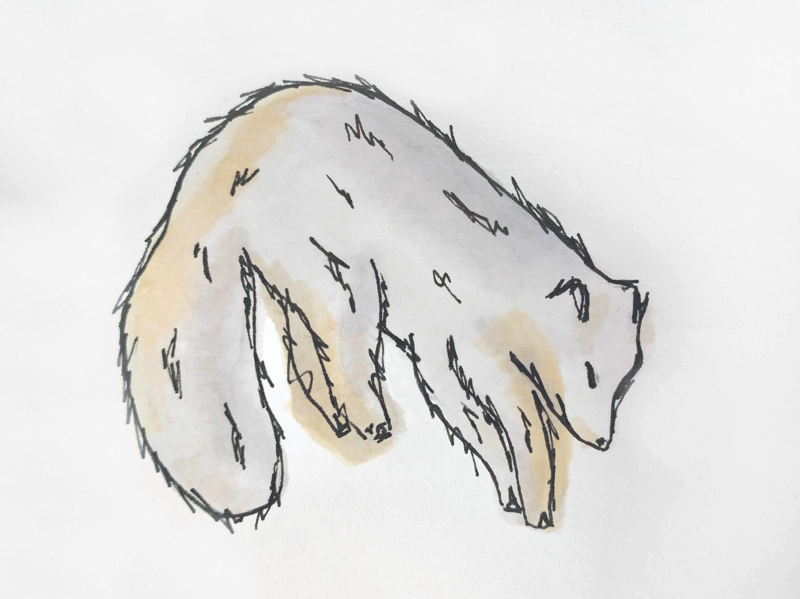
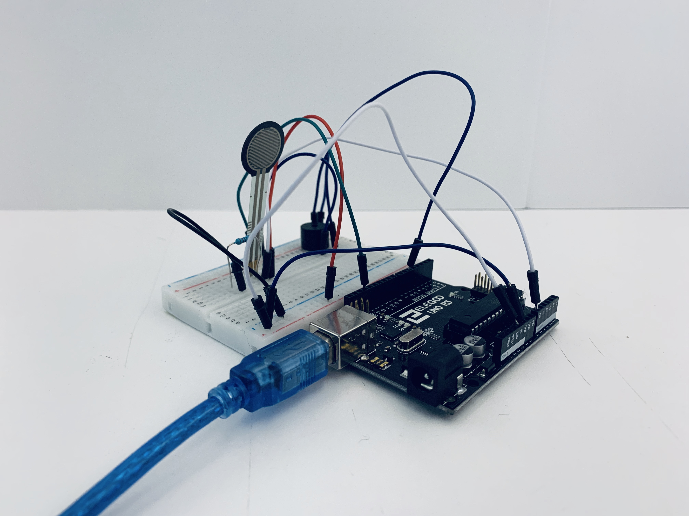
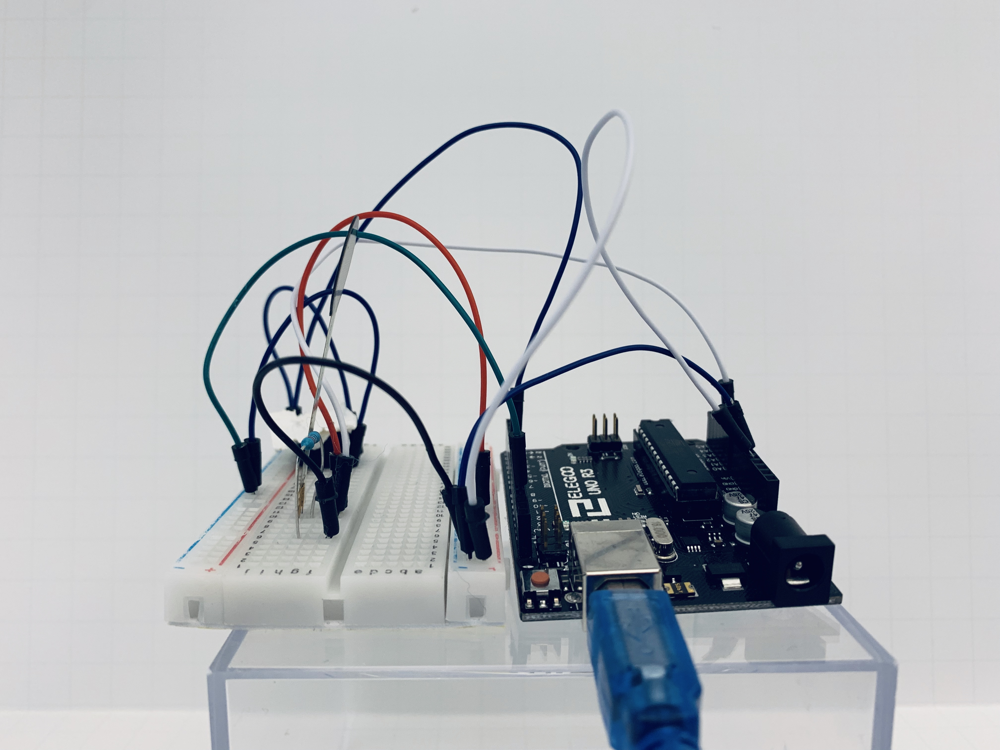
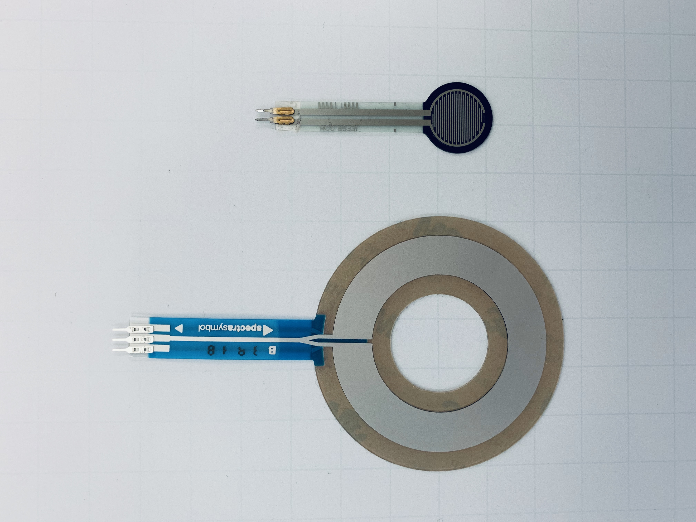
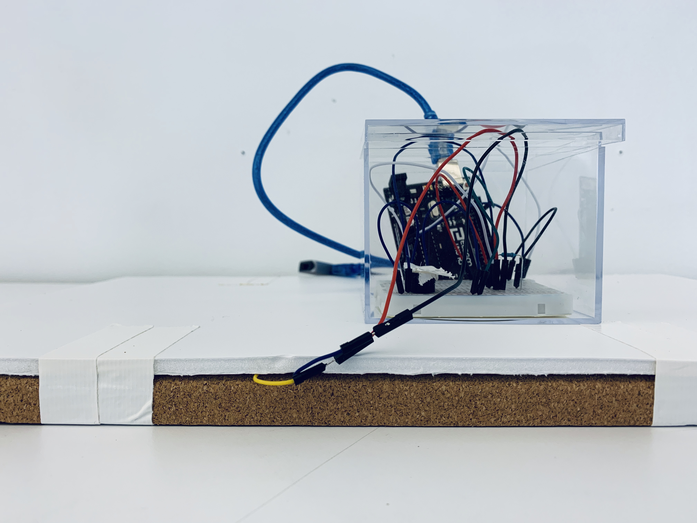

Artic Fox (Alopex lagopus) Enrichment
 

Behavior: Pouncing for Prey
Why try to encourage this behavior? After my initial research in week 1 of the Arctic Fox enrichment process, I began to dive deeper into the movement (leaping into the air with an arched back and pouncing down front paws/head-first into the snow with precision) that an arctic fox displays as a hunting tactic in the wild. While I was also interested in encouraging social behavior between arctic foxes, I was unable to find any documentation about arctic fox socialization. In fact, arctic foxes are known for being lonely animals as they often mate multiple times (monogamous) and do not exhibit pack or family bonding behavior.
I began thinking about how this way of moving that I have mentioned above could be used for alternative goals besides catching prey. Their decision to "pounce" as I am calling it, is triggered by their detection of a sound (which they determine as prey) from beneath the snow. They are able to make this determination with great precision due to the structure of their forward-facing ears. So I also began to think about how sounds could be used to trigger the fox movement, and what those sounds should be, and also what the reward should be for exhibiting a successful pounce.
Enrichment Design
Interestingly, I found a video of a domestic arctic fox in which the pounce behavior seems playful. Focusing on this behavior, and how it is exhibited in the wild, I decided to design an enrichment that centers around improving their precision and encouraging pouncing behavior as both playful and reward-driven.
This enrichment aims to improve their precision and encourage a unique behavior that they exhibit in the wild.
A few scientists believe that the arctic fox uses the magnetism of the earth like a compass and are best at pin-pointing and catching prey when they are facing north. This device could shift to different orientations to test this behavior as well. Additionally, they are facing threat from the larger "red fox" as it moves north into their territory due to climate change, and their primary prey, the lemmings, are also becoming more scace. For this reason, I believe that honing their precision capabilities may be integral to their survival amidst these new challenges.
Form Factor
For form, Arctic Foxes main prey are the Lemming. Lemming's make high pitched squeaking noises, therefore the piezo buzzer would produce a sound within this range to be familiar for the fox to its natural prey. The casing will consist of a pressurized floor (similar to that of a ballet or gymnastics studio with some flexible give).
   Context
The floor will be covered up with snow or synthetic snow or a mat so that the fox cannot actually see where the noise is coming from. The moving floor sensor will be sensitive to a different level of pressure and will stop releasing the Lemming sound when pounced on to signify a successful catch on the fox's part.
Behavior/Outcome-Based Workflow
Fox hears sound, fox approaches platform > Fox detects pin-point location of sound > Fox pounces to turn sound off > Reward distributed

Next Iteration
Ideally, this product will incorporate a movement mechanism, (wheels of some kind) that are activated with an ultrasonic sensor that reads the closeness of the fox. This way, the prey simulation device would actually move out of the way if the fox wasn't stealthy enough so it would provide a greater challenge.
The materials used for both the bottom level/chamber of the floor and the prey device would be a plastic that can slide easily back and forth, along with a cushioned top floor layer (like a vault floor in a gymnastics studio) so that the fox will not injur itself when pouncing.
Product Inspiration
These images serve to show products which give some element of inspiration for a part of the product I have created.